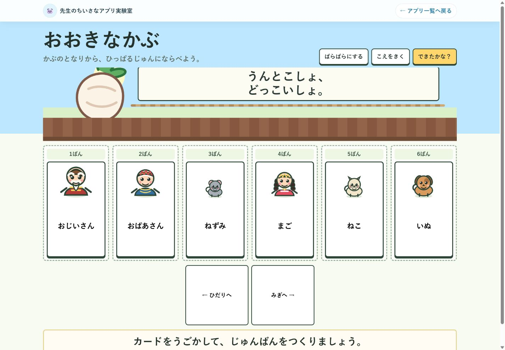

ずっと探していた「伝え方」が、少し見えてきた。
大学院、講師経験、連盟のWeb・SNS運営、そしてAIとの出会い。別々に見えていた経験がつながり、若い先生へ実践知を渡す方法が少しずつ形になってきました。
このエッセイを読む教室から、ひとつずつ。
教室で生まれたアプリや教材、授業づくりの工夫、AI活用、教育エッセイを少しずつ紹介しています。忙しい毎日の中で、「明日やってみよう」と思える小さなヒントを届けます。

今日の「ちいさな」発見を
明日の教室へ。
Today’s story
今日、新しく書いた記事ではなく、今日読んでいただきたい一篇です。
大学院、講師経験、連盟のWeb・SNS運営、そしてAIとの出会い。別々に見えていた経験がつながり、若い先生へ実践知を渡す方法が少しずつ形になってきました。
このエッセイを読むSmall apps
教室で本当に欲しかったものを、小さく試しながら形にします。

画面イメージ 画面イメージ
画面イメージ
Experiment in progress
所見づくり実験室
職員室で見つけた困りごとのタネを、試しながら少しずつ育てています。
「所見づくりを、もう少し進めやすくできないかな」
先生が子どもの姿を振り返り、言葉を選ぶ過程を支える方法を考えています。
文章の長さや表現を整理できる試作品の形を検討します。
目的に合う入口
使いたいときは「アプリ・教材」、考え方や物語を読みたいときは「ノート・エッセイ」、育てている途中を見たいときは「実験室」へ。目的に合う5つの入口を選べます。
授業や先生の仕事に役立つ、アプリと教材です。
試した記録と、経験や思いを綴る読み物です。
まだ完成していないアイデアや試作品です。
Lab notes
アプリ、エッセイ、AI活用、授業づくりなど、実験室全体の動きを日付順に記録しています。
所見づくり実験室の非公開試作ページを追加しました。
「ずっと探していた『伝え方』が、少し見えてきた。」を最初のエッセイとして追加しました。
おおきなかぶアプリの表示を調整しました。
教材づくりで使えるプロンプトの記録を追加しました。
About this lab
アプリだけでなく、教材、授業づくり、AI活用、教育エッセイなど、教室から生まれたアイデアを発信しています。
ここは完成品だけを並べる場所ではありません。教室から生まれた小さなアイデアを試し、振り返り、先生同士で分かち合える形へ育てていく個人の実験室です。
「明日、ちょっとやってみよう」につながる場所へ。